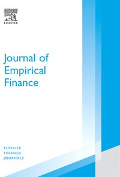
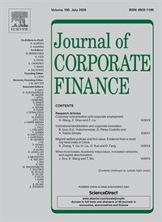
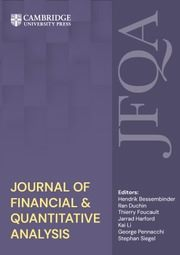
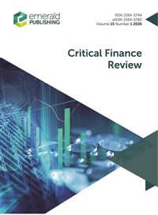
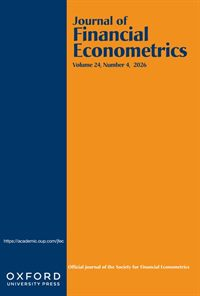
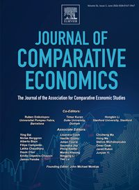
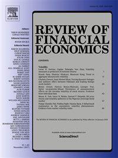
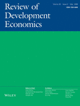
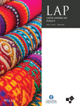
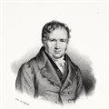

Wilfrid Laurier University · Waterloo, Canada
M. Fabricio Perez
Arthur Wesley Downe Professor of Finance
Vice Dean · Lazaridis School of Business & Economics
M. Fabricio Perez is the Arthur Wesley Downe Professor of Finance and Vice Dean of the Lazaridis School of Business & Economics at Wilfrid Laurier University, where he has been on faculty since 2008, after completing his Ph.D. in Economics at Arizona State University. His work spans three connected roles: research, academic leadership, and teaching, alongside service to his profession and community.
As a researcher, he develops and applies methods in financial econometrics, including factor models and GMM, to questions in asset pricing, price discovery, corporate finance, and international finance. His work has been published in journals such as the Journal of Financial and Quantitative Analysis, Journal of Financial Econometrics, and Journal of Banking and Finance, among others. His current projects sit increasingly at the intersection of policy and finance, from exchange-rate responses to tariffs to the role of artificial intelligence and financial literacy in markets, firms, and political systems. His international experience includes visiting positions at the University of San Diego and ESSEC Business School in Paris, France, and ongoing collaboration with the Universidad Andina Simón Bolívar in Quito, Ecuador.
As an academic leader, he serves as Vice Dean of one of Canada's largest business schools, with more than 6,000 students, over 150 full-time faculty, and three campuses. He shares responsibility for an $80 million budget and directs AACSB accreditation, student experiential learning, faculty research incentives, curriculum quality assurance, and multi-year academic planning. Earlier roles include Finance Area Chair, Director of the Financial Services Research Centre, and Coordinator of the Ph.D. in Financial Economics, and he has served on Wilfrid Laurier's Board of Governors and Senate, and on the University's Finance, Investments & Property Committee and Investment Oversight Sub-Committee.
As a teacher, he has offered courses in financial econometrics and quantitative methods, investments, and corporate finance across the Ph.D., Master of Finance, MBA, and undergraduate programs, and has mentored doctoral students to placements in academia and industry.
Beyond the university, his community work includes serving as a Board Member and Treasurer of the Waterloo United Soccer Club in Waterloo, Ontario.
Signaling via Stock Splits: Evidence from Short Interest
Short interest permanently declines after split announcements, consistent with firms using splits to relay positive, value-relevant signals that sophisticated investors act on.
Journal of Banking and Finance 172 (2025). · with A. Shkilko, N. Tang & P. van Ness

Follow the Leader: Index Tracking with Factor Models
Uses factor models to identify the compact set of stocks that best captures an index's systematic risk, enabling efficient index replication.
Journal of Empirical Finance 64 (2021): 337–359. · with P. Jiang

The Evolution of Pay Premiums for Managerial Attributes
Talent and conservatism explain executive pay over time, with the market premium for talent rising in bull markets and conservatism valued more after high-risk periods.
Journal of Corporate Finance 69 (2021). · with S. Li

Estimation of Multivariate Asset Models with Jumps
Introduces a tractable framework to estimate multivariate asset-price models with jumps and dependence, with applications to pricing and risk.
Journal of Financial and Quantitative Analysis 54(5) (2019): 2053–2083. · with L. Ballotta, A. Loregian & G. Fusai

Catering Through Nominal Share Prices Revisited
Re-examines the catering theory of nominal share prices and finds limited support once other firm characteristics are taken into account.
Critical Finance Review 6(1) (2017): 43–75. · with A. Shkilko
Factor Models for Binary Financial Data
Develops factor models tailored to binary financial outcomes, improving estimation relative to standard linear factor approaches.
Journal of Banking and Finance 61 (2015): S177–S188. · with A. Shkilko & K. Sokolov
Two-Pass Estimation of Risk Premiums with Multicollinear and Near-Invariant Betas
Shows how multicollinear, near-constant betas distort two-pass risk-premium estimates, and proposes a correction.
Journal of Empirical Finance 20(1) (2013): 1–17. · with S. C. Ahn & C. Gadarowski
Dynamic Effects of Idiosyncratic Volatility and Liquidity in Corporate Bond Spreads
Idiosyncratic volatility and liquidity jointly and dynamically drive corporate bond spreads.
Journal of Banking and Finance 37(8) (2013): 2969–2990. · with M. Kalimipalli & S. Nayak

Robust Two-Pass Cross-Sectional Regressions: A Minimum Distance Approach
A minimum-distance estimator that makes two-pass cross-sectional asset-pricing tests more robust and efficient.
Journal of Financial Econometrics 10(4) (2012): 669–701. · with S. C. Ahn & C. Gadarowski
Value Creation and Value Destruction in Investor-State Dispute Arbitration
Firms gain market value both when filing investor-state arbitration and when receiving an award, with gains often exceeding the monetary award itself.
Journal of Multinational Financial Management 63 (2022): 100728. · with J. C. Brada, C. Chen, J. Jia & A. M. Kutan

National Levels of Corruption and Foreign Direct Investment
Home- and host-country corruption jointly shape both the level and the direction of foreign direct investment.
Journal of Comparative Economics 47(1) (2019): 31–49. · with J. C. Brada, Z. Drabek & J. Mendez

Is There a Missing Factor? A Canonical Correlation Approach to Factor Models
A canonical-correlation method tests for and detects factors omitted from standard asset-pricing models.
Review of Financial Economics 36(4) (2018): 321–347. · with S. C. Ahn & S. Dieckmann
Illicit Money Flows as Motives for FDI
A share of foreign direct investment is motivated by the desire to move illicit money across borders rather than by real economic returns.
Journal of Comparative Economics 40(1) (2012): 108–126. Montias Prize · with J. C. Brada & Z. Drabek

The Effect of Home-Country and Host-Country Corruption on Foreign Direct Investment
Corruption in both the origin and the destination country shapes bilateral FDI flows, sometimes in offsetting ways.
Review of Development Economics 16(4) (2012): 640–663. · with J. C. Brada & Z. Drabek
Regional Integration in the NAFTA Area: The Case of Northeast Mexico
A book-length analysis of regional economic integration under NAFTA, with a focus on Northeast Mexico.
Pearson Education (2015). Book · with E. Ayala, J. Chapa, G. Genna & M. Treviño
Board Diversity and Risk-Taking
Ethnically diverse insurer boards adopt less risky strategies without sacrificing performance, driven by diversity in directors' uncertainty avoidance.
Journal of Insurance Issues 47(1) (2024): 35–77. · with M. Kelly & O. Kanj
Pricing Dynamics in the Market for Catastrophe Bonds
Documents how catastrophe-bond prices and risk premiums evolve with market conditions and underlying risk.
The Geneva Papers on Risk and Insurance 47(1) (2020): 172–202. · with P. Carayannopoulos & O. Kanj
Diversification Through CAT Bonds: Lessons from the Subprime Financial Crisis
Catastrophe bonds provided genuine diversification benefits that held up through the subprime financial crisis.
The Geneva Papers on Risk and Insurance 40(1) (2015): 1–28. · with P. Carayannopoulos

Spillover Effects of Quota or Parity Laws: The Case of Ecuador Women Mayors
Gender-parity legislation roughly doubles the probability that a woman is elected mayor, spilling over from proportional to single-seat races.
Latin American Policy 13(1) (2022): 82–103. · with S. Basabe-Serrano
- Price Discovery in Option Panels: Evidence from S&P 500 Index Options R&R · JBFWith Diego Amaya. A daily measure of each contract's contribution to price discovery shows informed traders favor short-term, at-the-money puts, and increasingly weekly options.
- Price Discovery in the Cross Section: Leaders and FollowersWith S. Dehghanpour & D. Amaya. A model and empirical test of which stocks lead and which follow as information disseminates under high-frequency trading.
- When Voters Can Do the Math: Financial Literacy and ClientelismWith S. Basabe-Serrano and P. Freire. Across 26 democracies, electorates with higher financial literacy have substantially less clientelistic governing parties.
- Exchange-Rate Responses to “Liberation Day” DraftWith J. C. Brada. An event study of 139 currencies around the April 2025 U.S. tariff announcement finds the dollar fell against most currencies.
- Beyond Adoption: AI Intensity in Emerging-Economy SMEs SubmittedWith P. Freire. A new AI adoption-intensity index built from a survey of 500+ SMEs, combining tool diversity, functional breadth, duration, and governance.
- IPO Wealth Allocation Under revisionWith Ning Tang. How IPO wealth is split between issuers and subscribers.
- Linear Estimation of the Number of Latent Factors In progressImproved estimation of the number of latent factors in large financial panels; to be presented at the 2026 Econometric Society meeting.
- Heteroskedastic-Corrected Heckman Selection Model In progressWith S. Ahn. Extending the Heckman correction to settings with heteroskedasticity.
On the Board of Governors he served on the Finance, Investments & Property Committee (operating budgets, capital projects and financial policies), the Investment Oversight Sub-Committee (endowment management and risk governance), and the Governance Committee (board renewal, nominations and policy).
An academic genealogy traces the chain of doctoral advisors, who mentored whom, back through the centuries. Following the Mathematics Genealogy Project, Fabricio's scholarly lineage runs from his Ph.D. advisor, Seung Chan Ahn, back through the Nobel laureate Kenneth Arrow and the statistician Harold Hotelling, into a line of mathematicians that includes Poisson, Laplace, Lagrange, Leonhard Euler and the Bernoullis, and further still, past Nicolaus Copernicus and Erasmus of Rotterdam, to the Persian and Byzantine scholars Omar Khayyám and Avicenna. All told, it reaches back nearly a thousand years.
- Persian polymath and physicianc. 1015
- Renaissance humanist1497
- Astronomer1499
- Mathematician1694
- Mathematician1726
- Mathematician1754
- Mathematician and astronomer1769

Mathematician and physicist1800- HHStatistician and economist1924
- KAEconomist · Nobel laureate1951
- JKEconometrician1964
- PSEconometrician1970
- SASeung Chan AhnEconometrician · Ph.D. advisor1990
- M. Fabricio PerezFinance and financial econometrics2008
Lineage from the Mathematics Genealogy Project (North Dakota State University and the American Mathematical Society). Portraits are in the public domain.
Presentations, talks, and readings will be added here.
Get in touch
Office
Lazaridis School of Business & EconomicsWilfrid Laurier University
75 University Avenue West
Waterloo, Ontario N2L 3C5, Canada
mperez@wlu.ca